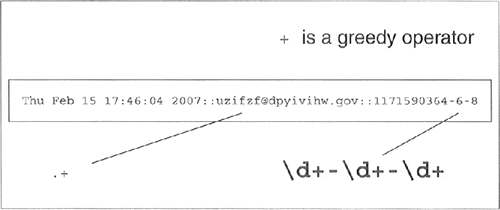
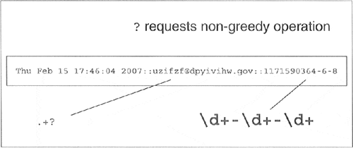

| < BACK | Make Note | Bookmark | CONTINUE > |
Regular Expression Adventures
We will now run through an in-depth example of the different ways of using regular expressions for string manipulation. The first step is to come up with some code that actually generates some random (but-not-so-random) data on which to operate. In Example 15.2, we present gendata.py, a script which generates a data set. Although this program simply displays the generated set of strings to standard output, this output may very well be redirected to a test file.
NOTE
Unix systems, as well as others, use architecture-size integers to represent the current time in seconds. Since most systems today are 32-bit, the total amount of time recognized by any platform using this mechanism is 232 seconds. Such integers are signed, so we really only have 231-1 seconds.
The current time is recognized as the number of seconds which have elapsed since time zero, which is pegged at midnight, January 1, 1970. Moving forward to the maximum possible positive 32-bit signed integer (231 - 1), we arrive at the "end of time," which evaluates to Tuesday morning, January 19, 2038 at 3:14 AM and 7 seconds using Universal Coordinated Time (UTC/GMT). Hopefully by then, we would have discontinued the use of 32-bit systems. This phenomena is otherwise known as the Y2038 problem.)
Here is one way you could find out what the special date/time it is for your local time, using Python:
>>> import sys, time >>> time.asctime(time.localtime(sys.maxint))# Pacific Time 'Mon Jan 18 19:14:07 2038'
sys.maxinthas the last possible second using a 32-bit integer. We feed that time in seconds to time.localtime()to obtain the tuple for your/our local time (here we are on Pacific Time), and finally, we ship that tuple off to time.asctime()to obtain the standard timestamp for the last possible second. As you can see from our example, we are eight hours west of the Prime/Greenwich Meridian.
This is not as much a Python Core Note as it is a general programming note, but should be nevertheless discussed for common knowledge since it applies to all 32-bit systems with applications using on the C language, regardless of platform, i.e., UNIX and non-UNIX, which use UNIX-style dating. In the gendata.py script coming up, we randomly generate integers, effectively generating random dates for our application.
This script generates strings with three fields, delimited by a pair of colons, or a double-colon. The first field is a random (32-bit) integer, which is converted to a date (see the accompanying Core Note). The next field is a randomly-generated electronic mail (e-mail) address, and the final field is a set of integers separated by a single dash ( - ).
Example 15.2. Data Generator for RE Exercises (gendata.py)
Create random data for regular expressions practice and output the generated data to the screen.
<$nopage> 001 1 #!/usr/bin/env python 002 2 003 3 from random import randint,choice 004 4 from string import lowercase 005 5 from sys import maxint 006 6 from time import ctime 007 7 008 8 doms = ( 'com', 'edu', 'net', 'org', 'gov' ) 009 9 010 10 for i in range(randint(5, 10)): 011 11 dtint = randint(0, maxint-1) # pick date 012 12 dtstr = ctime(dtint) # date string 013 13 014 14 shorter = randint(4, 7) # login shorter 015 15 em = '' 016 16 for j in range(shorter): # generate login 017 17 em = em + choice(lowercase) 018 18 019 19 longer = randint(shorter, 12) # domain longer 020 20 dn = '' 021 21 for j in range(longer): # create domain 022 22 dn = dn + choice(lowercase) 023 23 024 24 print '%s::%s@%s.%s::%d-%d-%d' % (dtstr, em, 025 25 dn, choice(doms), dtint, shorter, longer) 026 <$nopage>
Running this code, we get the following output (your mileage will definitely vary) and store locally as the file redata.txt:
Thu Jul 22 19:21:19 2004::izsp@dicqdhytvhv.edu::1090549279-4-11 Sun Jul 13 22:42:11 2008::zqeu@dxaibjgkniy.com::1216014131-4-11 Sat May 5 16:36:23 1990::fclihw@alwdbzpsdg.edu::641950583-6-10 Thu Feb 15 17:46:04 2007::uzifzf@dpyivihw.gov::1171590364-6-8 Thu Jun 26 19:08:59 2036::ugxfugt@jkhuqhs.net::2098145339-7-7 Tue Apr 10 01:04:45 2012::zkwaq@rpxwmtikse.com::1334045085-5-10
You may or may not be able to tell, but the output from this program is ripe for regular expression processing. Following our line-by-line explanation, we will implement several REs to operate on this data, as well as leave plenty for the end-of-chapter exercises.
Line-by-line explanation
Lines 1 – 6
In our example script, we require the use of multiple modules. But since we are utilizing only one or two functions from these modules, rather than importing the entire module, we choose in this case to import only specific attributes from these modules. Our decision to use from-import rather than import was based solely on this reasoning. The from-import lines succeed the UNIX start-up directive on line 1.
Line 8
doms is simply a set of higher-level domain names from which we will randomly pick for each randomly-generated e-mail address.
Lines 10–12
Each time gendata.py executes, between 5 and 10 lines of output are generated. (Our script uses the random.randint() function for all cases where we desire a random integer.) For each line, we choose a random integer from the entire possible range (0 to 231 - 1 [sys.maxint]), then convert that integer to a date using time.ctime().
Lines 14–22
The login name for the fake e-mail address should be between 4 and 7 characters in length. To put it together, we randomly choose between 4 and 7 random lowercase letters, concatenating each letter to our string one-at-a-time. The functionality of the random.choice() function is given a sequence, return a random element of that sequence. In our case, the sequence is the set of all 26 lowercase letters of the alphabet, string.lowercase.
We decided that the main domain name for the fake e-mail address should be between 4 and 12 characters in length, but at least as long as the login name. Again, use random lowercase letters to put this name together letter-by-letter.
Line 24–25
The key component of our script puts together all of the random data into the output line. The date string comes first, followed by the delimiter. We then put together the random e-mail address by concatenating the login name, the "@" symbol, the domain name, and a randomly chosen high-level domain. After the final double-colon, we put together a random integer string using the original time chosen (for the date string), followed by the lengths of the login and domain names, all separated by a single hyphen.
Matching a string
For the following exercises, create both permissive and restrictive versions of your REs. We recommend you test these REs in a short application which utilizes our sample redata.txt file above (or use your own generated data from running gendata.py). You will need to use it again when you do the exercises.
To test the RE before putting it into our little application, we will import the re module and assign one sample line from redata.txt to a string variable data. These statements are constant across both illustrated examples.
>>> import re >>> data = Thu Feb 15 17:46:04 2007::uzifzf@dpyivihw.gov::1171590364-6-8
In our first example, we will create a regular expression to extract (only) the days of the week from the timestamps from each line of the data file redata.txt. We will use the following RE:
"^Mon|^Tue|^Wed|^Thu|^Fri|^Sat|^Sun"
This example requires that the string start with ("^" RE operator) any of the seven strings listed. If we were to "translate" the above RE to English, it would read something like, “the string should start with "Mon," "Tue,"… , "Sat," or "Sun."
Alternatively, we can bypass all the carat operators with a single carat if we group the day strings like this:
"^(Mon|Tue|Wed|Thu|Fri|Sat|Sun)"
The parentheses around the set of strings mean that one of these strings must be encountered for a match to succeed. This is a "friendlier" version of the original RE which we came up with which did not have the parentheses. Using our modified RE, we can take advantage of the fact that we can access the matched string as a subgroup:
>>> patt = '^(Mon|Tue|Wed|Thu|Fri|Sat|Sun)'
>>> m = re.match(patt, data)
>>> m.group() # entire match
'Thu'
>>> m.group(1) # subgroup 1
'Thu'
>>> m.groups() # all subgroups
('Thu',)
This feature may not seem as revolutionary as we have made it out to be for this example, but it definitely advantageous in the next example or anywhere you provide extra data as part of the RE to help in the string matching process, even though those characters may not be part of the string you are interested in.
Both of the above REs are the most restrictive, specifically requiring a set number of strings. This may not work well in an internationalization environment where localized days and abbreviations are used. A looser RE would be:"^\w{3}."This one requires only that a string begin with three consecutive alphanumeric characters. Again, to translate the RE into English, the carat indicates "begins with," the "\w" means any single alphanumeric character, and the "{3}" means that there should be 3 consecutive copies of the RE which the "{3}" embellishes. Again, if you want grouping, parentheses should be used, i.e., "^(\w{3}):"
>>> patt = '^(\w{3})'
>>> m = re.match(patt, data)
>>> if m != None: m.group()
…
'Thu'
>>> m.group(1)
'Thu'
Note that an RE of "^(\w){3}" is not correct. When the "{3}" was inside the parentheses, the match for 3 consecutive alphanumeric characters was made first, then represented as a group. But by moving the "{3}" outside, it is now equivalent to 3 consecutive single alphanumeric characters:
>>> patt = '^(\w){3}'
>>> m = re.match(patt, data)
>>> if m != None: m.group()
…
'Thu'
>>> m.group(1)
'u'
The reason why only the "u" shows up when accessing subgroup 1 is that subgroup 1 was being continually replaced by the next character. In other words, m.group(1) started out as "T," then changed to "h," then finally was replaced by "u." These are 3 individual (and overlapping) groups of a single alphanumeric character, as opposed to a single group consisting of 3 consecutive alphanumeric characters.
In our next (and final) example, we will create a regular expression to extract the numeric fields found at the end of each line of redata.txt.
Search vs. Match
Before we create any REs, however, we realize that these integer data items are at the end of the data strings. This means that we have a choice of using either search or match. Initiating a search makes more sense because we know exactly what we are looking for (set of 3 integers), that what we seek is not at the beginning of the string, and that it does not make up the entire string. If we were to perform a match, we would have to create an RE to match the entire line and use subgroups to save the data we are interested in. To illustrate the differences, we will perform a search first, then do a match to show you that searching is more appropriate.
Since we are looking for 3 integers delimited by hyphens, we create our RE to indicate as such: "\d+-\d+-\d+". This regular expression means, “any number of digits (at least one, though) followed by a hyphen, then more digits, another hyphen, and finally, a final set of digits. We test our RE now using search():
>>> patt = '\d+-\d+-\d+' >>> re.search(patt, data).group() # entire match '1171590364-6-8'
A match attempt, however, would fail. Why? Because matches start at the beginning of the string, the numeric strings are at the rear. We would have to create another RE to match the entire string. We can be lazy though, by using ".+" to indicate just an arbitrary set of characters followed by what we are really interested in:
patt = '.+\d+-\d+-\d+' >>> re.match(patt, data).group() # entire match 'Thu Feb 15 17:46:04 2007::uzifzf@dpyivihw.gov::1171590364-6-8'
This works great, but we really want the number fields at the end, not the entire string, so we have to use parentheses to group what we want:
>>> patt = '.+(\d+-\d+-\d+)' >>> re.match(patt, data).group(1) # subgroup 1 '4-6-8'
Eek! What happened? We should have extracted "1171590364-6-8," not just "4-6-8". Where is the rest of the first integer? The problem is that regular expressions are inherently "greedy." That means that with wildcard patterns, regular expressions are evaluated in left-to-right order and try to "grab" as many characters as possible which match the pattern. In our case above, the ".+" grabbed every single character from the beginning of the string, including most of the first integer field we wanted. The "\d+" needed only a single digit, so it got "4," while the ".+" matched everything from the beginning of the string up to that first digit: "Thu Feb 15 17:46:04 2007::uzifzf@dpyivihw.gov::117159036," as indicated below in Figure 15-2.
Figure 15.2.
The solution is to use the "don't be greedy" operator, "?". It can be used after "*", "+", or "?". This directs the regular expression engine to match as few characters as possible. So if we place a "?" after the ".+", we obtain the desired result illustrated in Figure15-3.
Figure 15.3. Solving the Greedy Problem:? Requests Non-Greediness
>>> patt = '.+?(\d+-\d+-\d+)' >>> re.match(patt, data).group(1) # subgroup 1 '1171590364-6-8'
One final example. Let's say we want to pull out only the middle integer of the three-integer field. Here is how we would do it (using a search so we don't have to match the entire string): "-(\d+)-". Trying out this pattern, we get:
>>> patt = '-(\d+)-' >>> m = re.search(patt, data) >>> m.group() # entire match '-6-' >>> m.group(1) # subgroup 1 '6'
We barely touched upon the power of regular expressions, and in this limited space we have not been able to give them justice. However, we hope that we have given an informative introduction so that you can add this powerful tool to your programming skills. We suggest you refer to the documentation for more details on how to use REs with Python. For more complete immersion into the world of regular expressions, we recommend Mastering Regular Expressions by Jeffrey E. F. Friedl.
| Last updated on 9/14/2001 Core Python Programming, © 2002 Prentice Hall PTR |
| < BACK | Make Note | Bookmark | CONTINUE > |